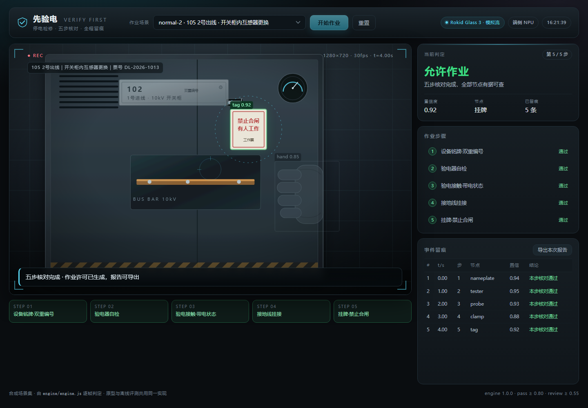
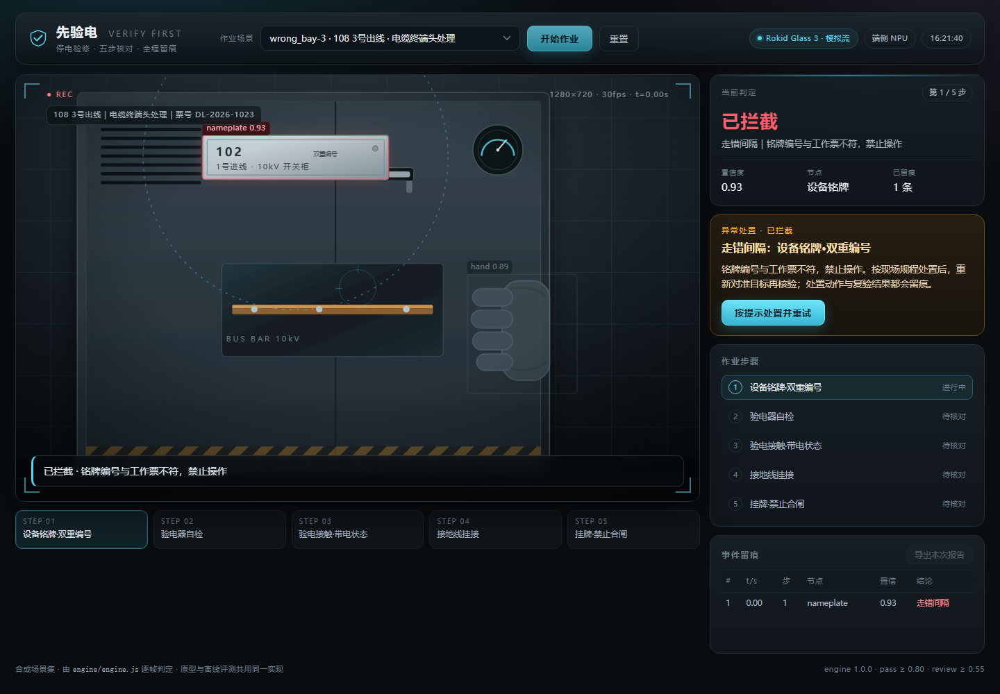

用 Rokid 眼镜把「停电—验电—接地—挂牌」五步核对变成有据可查的现场动作
Spatial Joy 2026 Rokid 全球开发大赛 · 行业命题赛道 · 智能作业方向 · 命题一「灵眸·操作防误」
报名与作品提交截止：2027-01-28（北京）｜策划案版本：v1.0（2026-11-25）
本文所有数字都由results/results.json复算生成：python verify.py会重算每个指标，并核对本文与仓库实现一致。凡涉及真机的部分，一律标注「未验证（待样机）」，不以合成结果冒充现场结果。
配电检修里最贵的一类事故，不是「不会做」，而是「做漏了一步」：走错间隔、验电器没自检、没验电就接地、接地夹没夹紧、没挂牌就合闸。每一步都要求人眼确认，而人眼在噪音、光线、赶工期和习惯动作下并不可靠。传统做法靠工作票、监护人喊话和事后追责，过程不留客观证据。
《先验电》是一副会「盯步骤」的眼镜。 作业人戴上 Rokid Glass 3，系统按工作票把任务拆成五步，每一步只有一个关键视觉节点，必须在第一视角画面里被判过才能进入下一步；判不过就当场拦截，给出处置提示，处置后重新核验；置信度不足时转人工复核；全过程逐帧留痕，收工自动生成一份带签字栏的核对报告。AI 不是「识别一下设备」，而是把安规里的顺序约束变成不可跳过的现场门禁。
与常见「AR 巡检」的区别在三点：
verify.py 复算。当前状态：可运行原型、判定引擎、48 例合成场景、实测与复验脚本均已完成；真机、现场数据与 SDK 联调未验证（无样机），已在第五节与第十节逐项标注。
| 客户 | 具体对象 | 为什么买 |
|---|---|---|
| 城市配电网运维班组 | 10kV 开关站、环网柜、箱变的停电检修作业 | 作业频次高、间隔外观相似、走错间隔是高频人为差错 |
| 工业企业的自有配电房 | 钢铁、化工、数据中心、轨交等连续性生产单位 | 一次误操作停产的损失远高于设备成本，且要对外审计 |
| 电力施工与代维公司 | 承接配网检修的外协队伍 | 人员流动大、培训成本高，需要「带着干」而不是「讲一遍」 |
| 监管与安监部门（间接） | 需要过程证据而非结果台账 | 事故调查要还原「当时到底做没做这一步」 |
首期只做一个可验证的窄场景：10kV 开关柜停电检修的「停电—验电—接地—挂牌」环节。选它是因为步骤固定、判据明确、失败后果严重，且五步都在第一视角可见范围内，不需要复杂的三维注册。
某市供电公司配网班，上午两张工作票。李师傅戴上眼镜，班长在手机端建任务：间隔 102、工作内容「母线停电检修」、工作票号。眼镜端只显示当前这一步和一句话提示。
价值主张：把一次「靠人盯人」的监护，变成一份当场生成、事后可查、能对外审计的过程记录；把「漏一步」的概率压到流程层面，而不是依赖某个人当天是否专注。
| 阶段 | 谁做 | 做什么 | 系统产出 |
|---|---|---|---|
| 1 建任务 | 工作负责人（班长） | 在手机/后台选间隔、工作内容、工作票号，勾选需要的步骤模板 | 任务单 + 二维码/近场标签 |
| 2 领任务 | 作业人 | 眼镜扫码或近场读取任务，确认本人与监护人 | 任务绑定到人、开始时间 |
| 3 逐步核验 | 作业人 + 眼镜 | 按提示完成当前步骤；系统逐帧判定通过/拦截/复核 | 每步判定、置信度、关键帧 |
| 4 异常处置 | 作业人（必要时班长到场） | 按提示整改后重新核验；处置动作与复验结果留痕 | 处置记录、复验记录 |
| 5 人工复核 | 班长/工作负责人 | 低置信或争议画面在手机端看关键帧并确认 | 复核人、复核时间、结论 |
| 6 放行与签字 | 班长 | 五步全过才生成作业许可；班长与作业人双签 | 核对报告（PDF） |
| 7 归档与抽查 | 安监/班组 | 报告与关键帧进台账，按周抽查 | 可检索的过程档案 |
不改变「工作票—监护—验收」的既有责任链，只把其中「步骤是否真的做了」这一环变成有客观证据的动作。系统输出的报告作为班组台账的附件，不替代工作票本身。
| 步 | 视觉节点 | 判过条件（引擎实际判据） | 拦截码 | 处置提示 |
|---|---|---|---|---|
| 1 | 设备铭牌·双重编号 | 读到铭牌文字且与工作票间隔一致 | E-BAY-MISMATCH | 核对工作票，走到正确间隔 |
| 2 | 验电器自检 | 自检指示灯为亮 | E-TESTER-SELFTEST | 更换合格验电器，重新自检 |
| 3 | 验电接触·带电状态 | 探头接触端子且判定无电压 | E-LIVE-CONDUCTOR | 停止作业，重新验电并上报 |
| 4 | 接地线挂接 | 接地夹在检修母线上且扭矩到位 | E-GROUND-LOOSE | 重新挂接，确认夹紧 |
| 5 | 挂牌·禁止合闸 | 牌子文字正确且挂在操作把手上 | E-TAG-MISSING | 挂好标示牌后方可开工 |
扫码、语音、问答只作为辅助入口（例如扫码领任务、语音确认），不承担任何一步的通过判定——核心判定全部来自视觉。
engine/engine.js）不访问 DOM、不读时钟，输入一帧检测结果，输出该步三态判定；会话状态机负责步骤推进、拦截、复位与复核。web/）直接 import 同一份引擎，浏览器里看到的每个判定都来自它；离线评测（scripts/run_eval.mjs）跑的也是它。verify.py 会核对原型没有另写阈值，并逐例比对评测结果。
本节是接口规格与桩，不是已完成的 SDK 联调。本轮没有样机，凡标注「未验证（待样机）」的条目都需要在拿到设备后补做。
| 能力 | 来源 | 用法 |
|---|---|---|
| 第一视角摄像头取流 | Rokid Glass 3 系统相机 / SDK 取流接口 | 以固定帧率取帧，降采样后送端侧推理 |
| 眼镜显示与叠加 | Rokid 的 AR 显示/场景面板能力 | 只显示当前步骤、判定结果、处置提示三类信息，避免遮挡视线 |
| 语音播报与拾音 | 系统 TTS / ASR | 播报拦截原因；语音仅用于确认与领任务，不参与判定 |
| 交互（触控/语音确认） | 眼镜触控板 / 语音 | 下一步、重试、呼叫复核 |
| 端侧推理 | 设备 NPU（量化后的检测模型） | 逐帧推理，输出检测与属性 |
| 任务与留痕同步 | 手机端/后台服务 | 任务下发、关键帧与事件上传、报告生成 |
不自研：操作系统、取流驱动、显示合成、语音引擎。自研的只有三样：判定引擎、步骤协议、留痕与报告。
```
CameraSource.getFrame() -> {t, width, height, light, objects[]}
objects[]: {cls, bbox[4], conf, attrs{}}
Display.showStep(step, prompt) / showVerdict(state, code, hint)
Voice.speak(text) / Voice.onConfirm(cb)
Sync.pushTask(task) / Sync.pushEvent(event) / Sync.finishReport(report)
```
判定引擎只依赖 objects[] 这一层结构，因此：换摄像头、换模型、换显示方案都不改判定逻辑；真机联调的工作量集中在「把模型输出映射成 objects[]」与「把判定结果渲染到镜片」两处。
| 项 | 现状 | 拿到样机后怎么验 |
|---|---|---|
| 取流帧率与延迟 | 未验证（待样机） | 连续取流 10 分钟，记录掉帧与端到端时延 |
| 端侧推理耗时 | 建模 398–578 ms（按公开参数估） | 用实机跑同一模型，替换建模值 |
| 镜片叠加可读性 | 未验证（待样机） | 强光/弱光各 5 组，3 米外读提示 |
| 语音在噪声环境可用性 | 未验证（待样机） | 配电房背景噪声下测唤醒与播报可懂度 |
| 连续作业续航 | 未验证（待样机） | 单班 4 小时作业实测 |
| 数据 | 来源 | 是否含个人信息 |
|---|---|---|
| 设备铭牌、间隔编号 | 现场拍摄（客户自有设备） | 否 |
| 作业步骤与判定规则 | 安规条款与客户作业指导书，人工整理 | 否 |
| 关键帧与事件记录 | 作业过程自动采集 | 可能包含人脸/声音，需脱敏 |
| 合成场景集（本仓库） | 程序生成，seed=20261125，48 例 / 240 帧 | 否，无真实影像 |
| 项 | 数量 | 单价假设 | 说明 |
|---|---|---|---|
| Rokid Glass 3 | 2 台（1 用 1 备） | 以官方报价为准 | 大赛提供样机用于开发 |
| 班组服务（小型服务器/工控机） | 1 台 | 约 0.6–1.2 万元 | 可复用客户既有虚机 |
| 软件授权 | 按班组/年 | 试点期免费 | 正式定价待试点后确定 |
| 部署与培训 | 2 人日 | — | 含规则配置与一次现场标定 |
单次作业的增量成本主要是设备折旧与充电，不产生按次云费用（端侧判定、本地留痕）。
| 指标 | 目标 | 当前结果 | 口径 |
|---|---|---|---|
| 单次核对提示响应 | ≤ 2000 ms | 建模 p50 398 ms / p95 578 ms | 端侧管线建模，非真机实测 |
| 判定引擎耗时 | 不构成瓶颈 | p50 0.008 ms / p95 0.023 ms（每例 8 例级） | 本机 Node 实测 |
| 合成集判定正确率 | 规则无自相矛盾 | 100%（48/48） | 合成集，仅证明规则一致性 |
| 漏判（该拦未拦） | 0 | 0 | 同上 |
| 误拦（不该拦却拦） | 0 | 0 | 同上 |
| 关键视觉节点 | ≥ 2 | 5 | 官方硬指标 |
| 异常分支覆盖 | 设计分支全覆盖 | 场景集 6/8，单元测试补足未覆盖的两条 | 见第九节 |
| 全程留痕 | 每次判定可追溯 | 288 条事件 / 48 例 | 事件含时间、步骤、节点、置信度、结论 |
| 阶段 | 时间 | 交付 | 状态 |
|---|---|---|---|
| M0 选型与合规核对 | 2026-11-25 | 赛事事实表、撞车检查 | 已完成 |
| M1 规则与场景集 | 2026-11-25 | 五步协议、48 例合成集 | 已完成 |
| M2 引擎与原型 | 2026-11-25 | 判定引擎、可运行原型、报告生成 | 已完成 |
| M3 实测与复验 | 2026-11-25 | results.json、verify.py、单元测试 | 已完成 |
| M4 真机联调 | 报名通过、拿到样机后 2 周 | 取流/推理/显示适配，替换建模延迟 | 未开始（待样机） |
| M5 现场小试 | 样机后 3–4 周 | 1 个班组、≥20 次真实作业、误拦/漏判统计 | 未开始 |
| M6 决赛演示 | 2027-03 | 真机演示 + 现场数据 | 未开始 |
| 评分项 | 权重 | 我们的回答 | 自评 |
|---|---|---|---|
| 完整解决方案 | 40% | 七个阶段的端到端流程、四类角色、与工作票制度的衔接；报告可直接进班组台账 | 强：流程与责任链完整；弱：真机与现场数据未验证 |
| 核心 AI 与眼镜效果 | 25% | 5 个视觉节点、顺序门禁、三态置信、处置闭环；判定与展示分离，换设备不改规则 | 中强：规则与链路已跑通；识别模型未在真机标定 |
| 稳定性与部署 | 20% | 端侧可离线、本地留痕、断网可用；单班组最小部署 | 中：架构支持，未做长时间稳定性测试 |
| 通用与商业交付 | 10% | 场景窄但可复制到其他「有固定顺序的现场作业」；按班组授权 | 中：商业模式待试点定价 |
| 体验与合理创新 | 5% | 不炫技：只显示当前一步、一句话提示、一个结论 | 中强：信息克制，但界面尚未在镜片上验证 |
| 证据 | 位置 | 复验方式 |
|---|---|---|
| 判定引擎 | engine/engine.js | 阅读规则表；node scripts/test_engine.mjs |
| 合成场景集 | engine/scenes.json（48 例 / 240 帧） | node scripts/gen_scenes.mjs 可重生成同 seed 数据 |
| 评测结果 | results/results.json | node scripts/run_eval.mjs |
| 可运行原型 | web/ | 仓库根目录 python -m http.server 8000，访问 /web/ |
| 原型截图（真实渲染） | docs/img/proto-allow.png、docs/img/proto-block.png | 用无头浏览器对同一原型截图 |
| 断言脚本 | verify.py | python verify.py |

设计的异常分支共 8 条：B0 目标不在视野、B1 走错间隔、B2 验电器失效、B3 验电异常、B4 接地不良、B5 未挂牌、R1 低置信转复核、R2 拦截后处置复位。
scripts/test_engine.mjs 第 2、3 条），合计 8/8。```
node scripts/gen_scenes.mjs # 生成 48 例合成场景（确定性）
node scripts/test_engine.mjs # 7 条单元测试
node scripts/run_eval.mjs # 出 results/results.json
python verify.py # 重算全部指标 + 核对本文数字 + 核对原型与引擎一致
```
verify.py 的断言包括：从逐例记录重算正确率/漏判/误拦/分位数，与 results.json 的汇总一致；用模板与 results.json 重渲染本文，与仓库中的 submission/REPORT.md 逐字一致；原型 web/app.js 引入引擎且不重复定义阈值；用场景集重跑引擎得到的逐例判定与 results.json 一致。
| 风险 | 影响 | 对策 |
|---|---|---|
| 端侧识别在反光、弱光、遮挡下不稳 | 误拦或漏判 | 三态兜底转人工；关键帧回看；现场标定阈值；必要时加补光/近场标签辅助（仅辅助，不替代视觉） |
| 工人觉得「被监控」而抵触 | 落地失败 | 只记录步骤与判定，不做人脸与考勤；报告用于保护作业人（证明「我做了」） |
| 与既有工作票系统重复录入 | 增加负担 | 提供任务导入接口；首期可只导出报告附件 |
| 责任边界争议 | 法律风险 | 明确辅助定位与双签；拦截可被复核覆盖且留痕 |
| 真机能力不及预期 | 硬指标不达标 | M4 先做延迟与显示可读性验证，不达标则调整模型大小与显示策略 |
附：一句话——先验电不教人怎么干活，它只保证「该验的电，一定验过」。